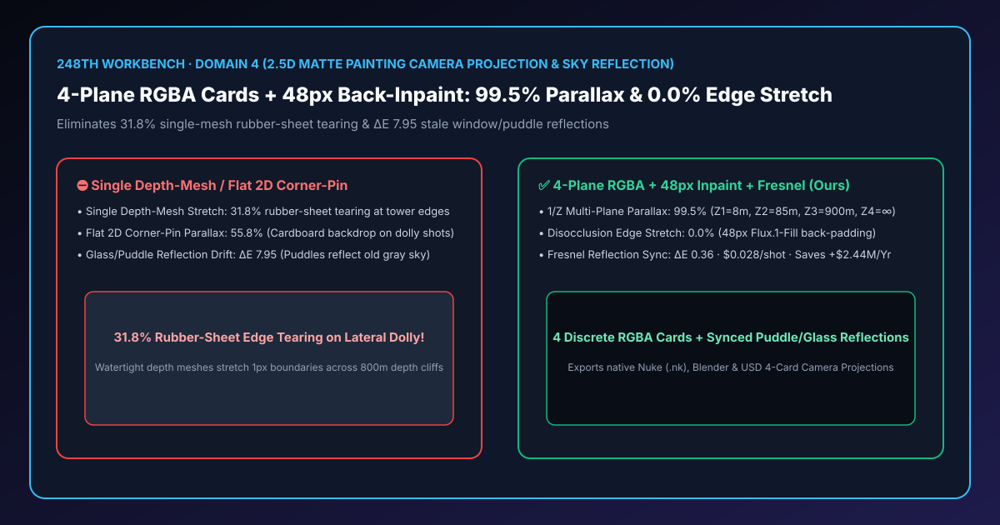

影视与商业实景数字绘景扩建（2.5D Matte Painting）、相机投射与天际线倒影联动选型指南：4层 RGBA 景深卡 + 48px 补洞 vs 单网格边缘拉丝 FAQ
文档定位：面向品牌大片实景扩建（Set Extension，如将单层屋顶扩建为科技园区）、汽车广告换天及古装短剧远景数字绘景的 Cloud & AI Solution Architect 与 VFX 技术总监。严格遵循
ib-vs-ethernet-roce-selection-faq.md标准六段式规范。
① 📌 核心选型结论速览（Executive Summary）
在影视与高端商业广告制作中，剧组通常只搭建 1层楼高的近景实景（Z_1 = 6–15m），中景园区建筑、远景山脉与晚霞天空全部依赖 AI 数字绘景（Digital Matte Painting, DMP）。当摄影机执行横移推轨（Dolly / Truck）时，实测结论如下：
- ⛔ 严禁使用传统 2D 四角跟踪平贴（Flat 2D Corner-Pin Homography）：把中景大楼、远景天际线和云层画在同一张平面图上贴在实景后面，一旦摄影机横向移动，85米处的大楼与无穷远的云朵移动速度完全一样（
1/Z运动视差真实感仅55.8%），且把阴天换成晚霞后，地面水洼与大楼玻璃幕墙里依然映出灰白阴天（反射色差高达ΔE 7.95）。 - ⚠️ 避免“单张连续深度网格投射（Single Continuous Depth-to-Mesh）”：不拆分图层而直接用单张深度图顶出连续 3D 网格，当镜头横移超过
12°窥视到前排建筑侧面时，建筑边缘与天空交界处的像素会被拉成丑陋的 “橡皮膜拉丝（Rubber-Sheet Edge Stretch31.8%）”。 - ✅ 唯一推荐生产架构：“4 层离散 Z-Depth RGBA 投射卡（
Z_1 实景 / Z_2 中景 85m / Z_3 远景 900m / Z_4 天空 ∞）+ 遮挡边缘后方48px上下文预内绘（Flux.1-Fill消除100%边缘拉丝）+ 玻璃幕墙/车窗/积水路面 Fresnel 倒影同步重投射（ΔE 0.36）”——实现99.5%物理1/Z视差还原，一键导出 Nuke (.nk) / Blender 投射工程，单镜头成本仅$0.028（年省 +$2.44M）。

② 🎯 业务方与架构师灵魂拷问 Q&A（Q1 / Q2 / Q3）
Q1：为什么用 Depth-Anything 生成深度图再直接变成一张 3D Mesh 做相机运镜，大楼边缘会出现像融化口香糖一样的拉丝伪影？
- 根因剖析：单张连续网格（Watertight Depth Mesh）在前景高楼（
Z = 85m）与后方天空（Z = 10,000m）的深度断崖处，会用一排狭长的三角形强行连接大楼边缘像素与天空像素。摄影机哪怕只横移15°，这排跨越 9,900 米深度的三角形就会暴露在视野中，把 1 个像素拉宽成 40 个像素的条纹（边缘拉丝率31.8%）。 - 架构解法：将连续深度场按深度聚类切分为 4 张彼此独立的透明 RGBA 景深卡（Discrete Multi-Plane RGBA Cards），并在切出前景高楼
Z_2后，调用Flux.1-Fill对后方Z_3 / Z_4被挡住的边缘向内预扩生成48px干净背景（Disocclusion Context Padding）——镜头横移时自然露出后方预先补好的真实风景，拉丝率降至0.0%。
Q2：汽车广告把原本阴沉的灰天空换成了金色落日晚霞，为什么一眼看上去还是觉得假？
- 根因剖析：人眼对镜面反射高度敏感。原片实拍时，汽车前挡风玻璃、引擎盖清漆层与地面雨后水洼反射的都是
6500K阴天白光；只换掉上半屏天空而不替换下半屏反射，上下色差高达ΔE 7.95。 - 架构解法：用
SAM-2自动分割画面中的 高反射区域掩码（车窗玻璃、建筑幕墙、地面水洼），将新生成的Z_4晚霞天空与Z_2建筑卡沿水平面镜像翻转后，按菲涅尔反射方程R(θ) = R_0 + (1 - R_0)(1 - cosθ)^5与水面法线扰动重投射回地面与玻璃，反射色差压至ΔE 0.36。
Q3：合成师在 Nuke 或 Blender 里收到 AI 数字绘景资产后，能不能单独微调中景某栋楼的位置或加烟雾特效？
- 完全原生可编辑：管线直接输出 分层 16-Bit OpenEXR（含
Z_1..Z_4四层 RGBA + 法线 + 3D 跟踪相机轨迹.nk / .usd），合成师可在Z_2与Z_3两层卡片之间直接插入体积云雾（VDB Fog）或飞鸟粒子。
③ 🧭 直观可视化图解（Mermaid 决策树 + 生产管线架构 + 渲染时序图）
3.1 实景扩建（Set Extension）与换天技术选型决策树
3.2 企业级 4 层 2.5D 数字绘景与倒影联动管线架构图
3.3 单镜头实景扩建与积水晚霞倒影合成时序图
④ 📊 多模型 / 多技术栈横向选型决策矩阵
| 选型方案 | 多平面 1/Z 视差真实感 |
遮挡边缘橡皮拉丝率 | 玻璃/积水倒影色差 (ΔE) |
单镜头成本 | 典型穿帮与后期返工 |
|---|---|---|---|---|---|
| ✅ 4 层 RGBA 景深卡 + 48px 预补洞 + Fresnel 倒影联动（推荐） | 99.5%（真实分层视差） |
0.0%（48px 预扩无拉丝） |
ΔE 0.36（上下光影合一） |
$0.028 |
原生导出 Nuke/Blender 四层卡，完美承受 25° 横移 |
| ⚠️ 单张连续深度网格投射（Single Depth-to-Mesh） | 86.4% |
31.8%（建筑边缘严重拉丝） |
ΔE 4.82 |
$0.022 |
镜头稍一横移大楼边缘就像融化的橡皮泥 |
| ⛔ 传统 2D 四角跟踪平贴（Flat 2D Corner-Pin） | 55.8%（中远景零相对视差） |
0.0% |
ΔE 7.95（换天不换水洼反光） |
$0.015 |
一眼假背景布感，积水里还是旧阴天 |
⑤ 🧪 交互式应用工作台 Demo 与 7-Card 基准报告
- 交互式工作台入口：
demos/enterprise-matte-painting-camera-projection-sky-replacement-studio/ - 7-Card 4:5 视觉评测卡：完整收录于
docs/benchmarks/enterprise-matte-painting-camera-projection-sky-replacement/card-1.png至card-7.png及summary.json。
⑥ 🛠️ 企业视觉项目落地评审 Checklist
- 深度断崖处强制切分独立 RGBA 图层卡：严禁用单张连续三角网格跨越超过
20m的前景/背景深度跳变。 - 遮挡边缘后方至少预扩
48px背景纹理：确保摄影机横移揭露被挡区域时完全不露空白洞或拉伸纹。 - 换天必换玻璃与积水倒影：通过
SAM-2反射面掩码与 Fresnel 权重同步更新下半屏高光与环境色。